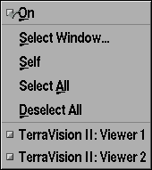
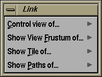

The 3-D Viewer "Link" Menu

The Link menu provides various facilities for displaying information
from another (or the same) viewer in the current viewer; as well
as controlling the view of another view from the current viewer.

All of the entries in this menu have a submenu with generally the
same entries. These entries let you decide how you wish to apply the
particular feature and which viewer is the source for the feature's
operation. For example,
- On : is used to globally disable or enable a feature
for the current viewer
- Select Window... : you are prompted to click over the
window of the viewer that you wish the operation to be applied
to.
- Self : you wish the operation to be applied to the
current window, e.g. display this viewer's flight path in this
viewer.
- Select All : apply this operation to all available
viewers, e.g. display the flight path of all viewers in this
viewer.
- Deselect All : essentially resets the state for this operation,
e.g. do not display the flight path of any viewer in this
viewer.
- TerraVision II: Viewer <n> : there will be n
entries at the end of the menu for all n open viewers. You can
select any viewer to be the source of an operation by
selecting the correct viewer in this list, e.g. show the
flight path for the viewer with the title "TerraVision II:
Viewer 2".
Control View of...

This option will control the viewpoint of another viewer based upon
the viewpoint of the current viewer. That is, it's viewpoint will be
slaved to the current viewer's viewpoint as you move around.
Show View Frustum of ...
This option will display the view frustum from another viewer in the
current viewer. This let's you see the position of the other viewer in
your display, and also it's field of view.
Show Tiles of ...
This option will display bounding boxes for the set of all tiles that
are being used to represent the scene in another viewer. Note that you
could also show the set of tiles for the current viewer too by
selecting the Self submenu option.
Show Path of ...
This option will display the flight path that is currently loaded for
the specified viewer(s). This will be represented as a line segment
with small view frustums at each of the sampled viewpoints for the
path. Again, you could also show the flight path for the current
viewer by selecting the Self submenu.
TerraVision Home Page